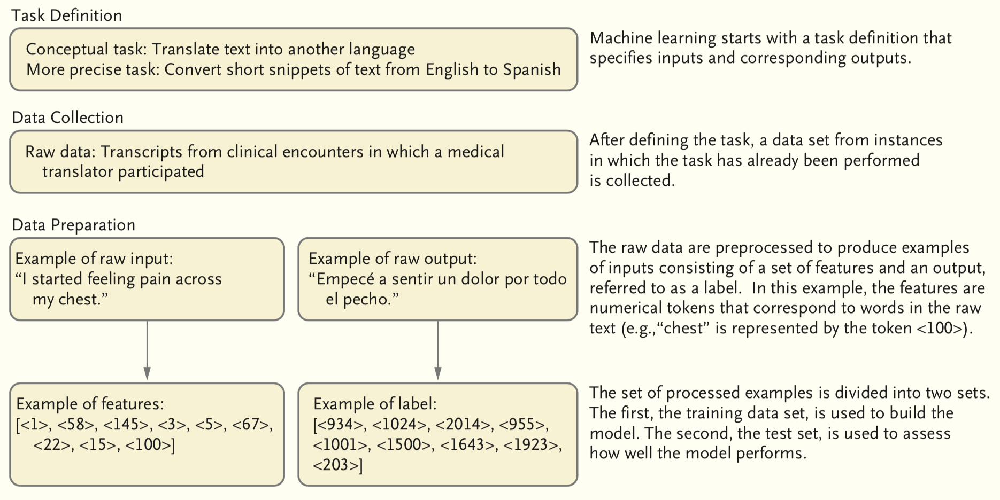
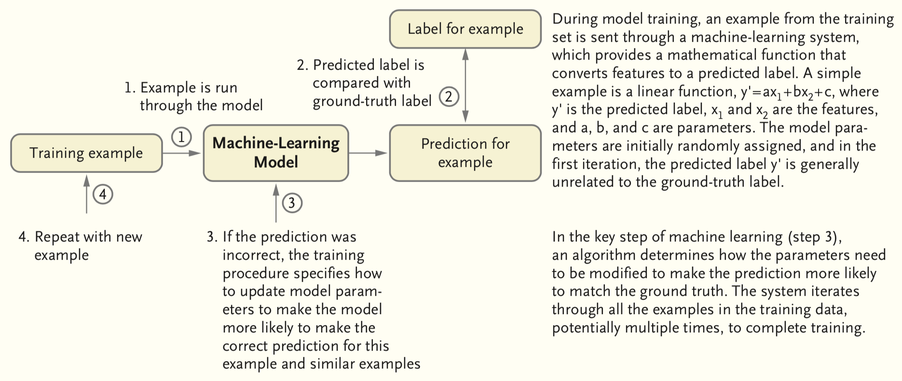
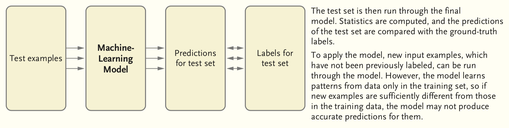
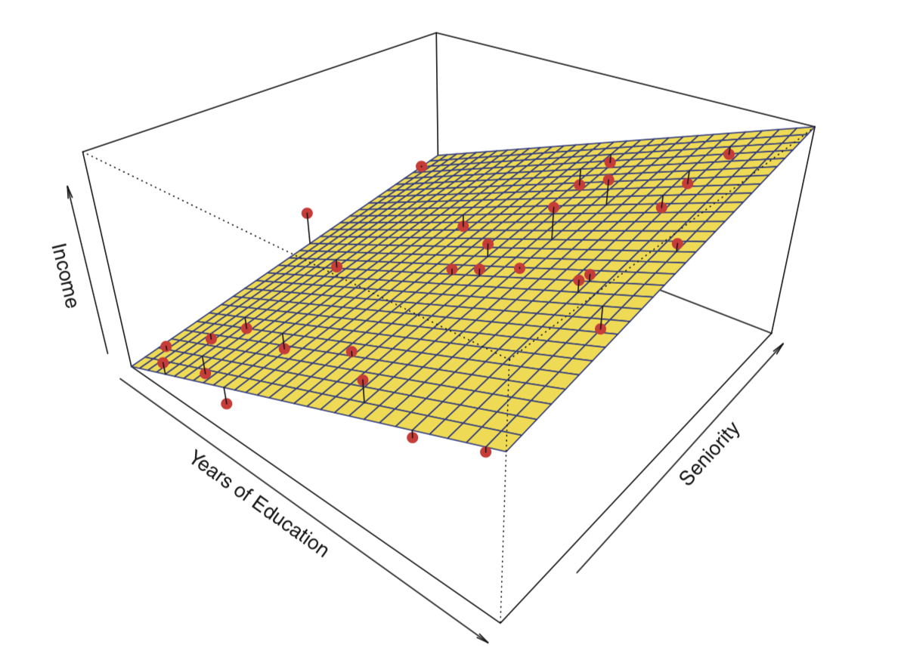
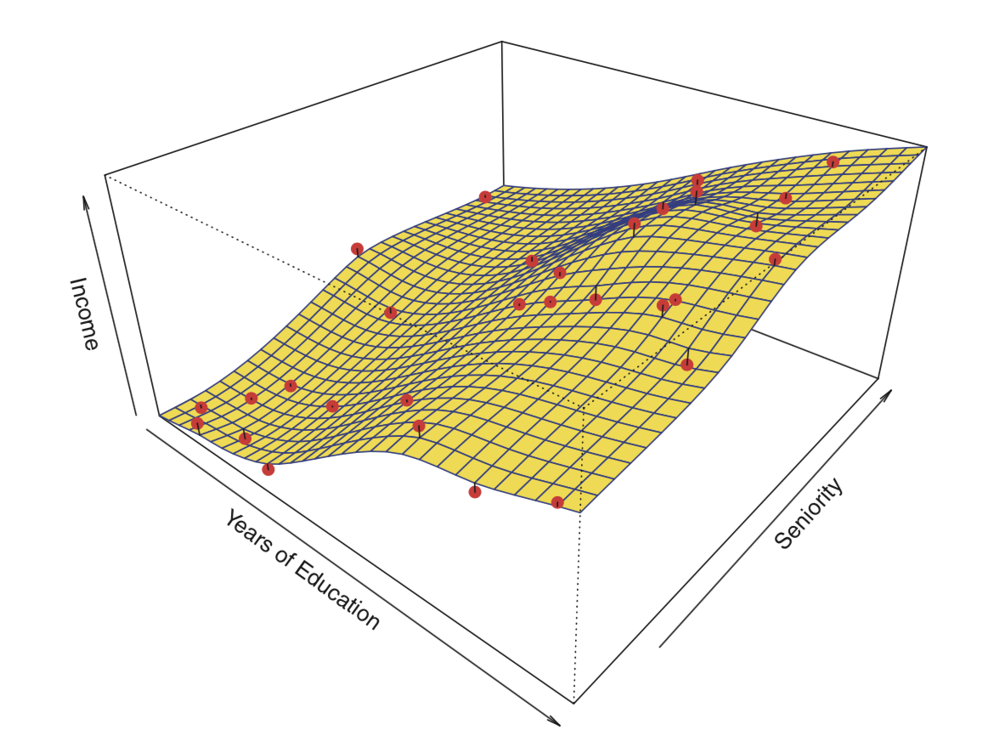
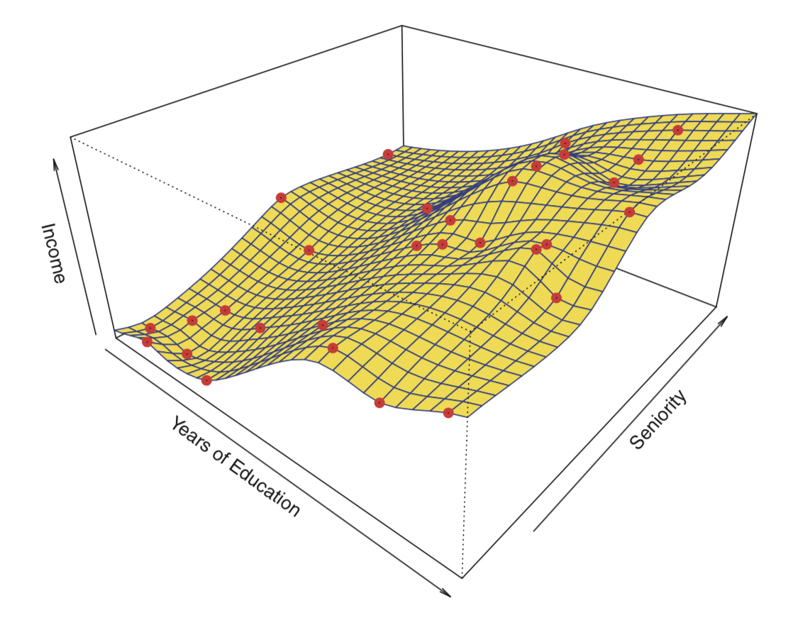
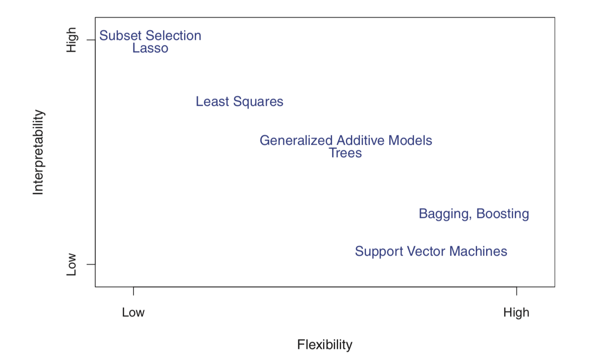
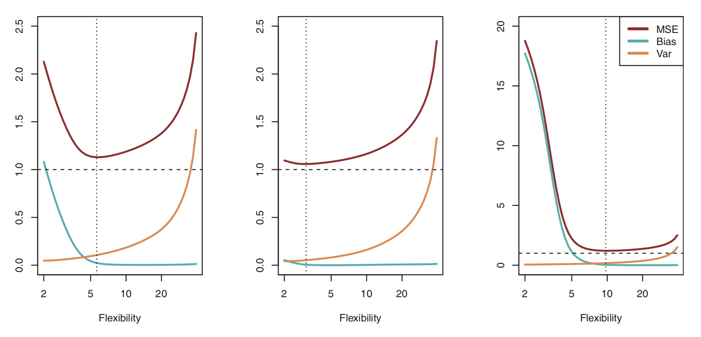
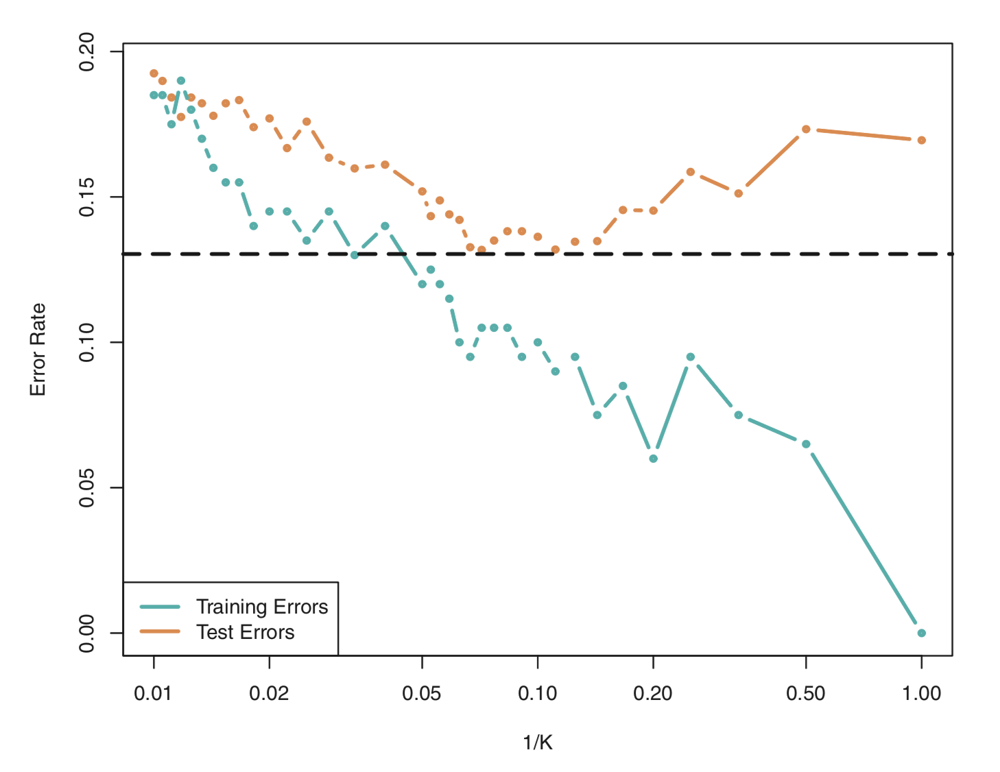

기계 학습 모델은 features 및 label 이라고도하는 입력 (input)및 출력(output) 데이터 수집이 필요합니다. 예를 들어, 환자들에서 기저 심혈관 위험인자들을 결정한 다음, 심근경색 발생 여부를 추적한 연구는 features가 위험 인자 세트이고 label이 미래의 심근 경색인 훈련 데이터를 제공 할 것입니다. 이 모델은 features을 사용하여 label을 예측하도록 훈련되었으므로, 새 환자의 경우 모델에서 심근경색이 발생할 위험을 예측합니다. 이 일반적인 프레임 워크는 다양한 작업에 사용될 수 있습니다.
Conceptual overview of supervised machine learning
Preparing to build a model

Traning a model

Evaluating a model

Introduction to machine learning with R
Classification, regression and clustering problems
기계학습은 지도 기계학습과 비지도 기계학습으로 구분한다. 지도 기계학습은 입력 변수를 기반으로 출력 변수를 예측하는 모델을 만드는 것이고, 비지도 기계학습은 출력 변수 없이 입력 변수만 가지고 자료의 상관 관계와 구조를 파악하는 것과 관련이 있다 (cluster analysis).
출력 변수는 반응 변수, 응답 변수, 또는 종속 변수라고 불리며 보통 \(Y\)를 사용하여 나타낸다.
입력 변수는 보통 \(X\)로 나타내고, 아래 첨자를 사용하여 서로 다른 입력 변수들을 구분한다. 입력 변수는 설명 변수, 예측 변수, 독립 변수, 특징(features) 또는 그냥 변수라고 불린다.
\(X\)와 \(Y\)의 관계를 다음 식으로 나타낼 수 있다.
\(Y\) = f(\(X\)) + \(e\)
\(X\) = \(X_1\) + \(X_2\) + … + \(X_p\); predictors, independent variables, features, variables
\(Y\); response variable, dependent variable
\(e\); random error term (independent of \(X\), mean = 0)
위에서 f는 어떤 함수이고, 지도 기계학습은 이 f를 추정하는 일련의 과정을 말하는 것이다.
f를 어떻게 추정하는지 하는 방법을 구체적으로 살펴보기에 앞서, 우선 f를 추정하고자 하는 목적, 이유에 대해 살펴보자. 크게 두가지로 구분해 볼 수 있는데, 그것은 바로 예측과 추론이다.
\[\hat{Y} = \hat{f}(X)\]
\(\hat{Y}\)은 Y에 대한 예측 결과를 나타내며, \(\hat{f}\)은 f에 대한 추정을 나타낸다.
예측 문제에서 \(\hat{f}\)는 보통 블랙박스로 취급된다. \(\hat{f}\)가 정확한 예측을 제공한다면 그것의 정확한 형태에 대해서는 통상 관심이 없기 때문이다.
\(\hat{Y}\)의 정확성은 오차를 얼마나 줄일 수 있느냐에 달려있다. 오차는 크게 축소가능한 오차와 축소불가능한 오차로 구분할 수 있다.
축소가능 오차(reducible error): 가장 적절한 기계학습 기법을 사용하여 f를 추정함으로써 \(\hat{f}\)의 정확성을 개선할 수 있다.
축소불가능 오차(irreducible error): 근본적으로 측정할 수 없는 변동성이나, 혹은 측정되지 않은 유용한 변수들에 대한 오차를 말한다.
축소불가능 오차는 예측 정확도의 상한선이 되겠지만, 그 경계는 현실적으로 거의 언제나 알려져 있지 않다. 우리는 축소가능 오차를 최대한 줄이는 f를 추정하는 기법들에 대해 다룬다.
추론은 X가 변함에 따라 Y가 어떻게 영향을 받는지를 이해하는데 관심이 있다. 따라서, \(\hat{f}\)는 블랙박스로 취급될 수 없다. 그것의 정확한 형태를 알아야 할 필요가 있기 때문이다.
훈련 데이터를 이용하여 f를 추정하는데, 이를 위한 기계학습 기법들은 크게 모수적 방법과 비모수적 방법으로 나누어 볼 수 있다.
\[f(X) = \beta_0 + \beta_1X_1 + \beta_2X_2 + ...+\beta_pX_p\]
다음으로 훈련데이터를 이용하여 모델을 적합(fit)하는 절차가 필요하다. 즉, 위 선형 모델의 경우, 파라미터 집합 \(\beta_0\), \(\beta_1\), \(\beta_2\),…, \(\beta_p\)을 추정하는 절차이며, 선형 모델의 적합에 가장 일반적으로 사용되는 기법은 최소제곱(least squares)이다.
[중요]
과적합(overfitting)이란 오차를 너무 면밀히 추적하는 것을 말한다. 일반적으로 모수적 방법에서 가정한 모델이 유연하고 복잡할 수록 (spline model > linear model) 과적합의 위험은 커진다.
figure
  
[Challenge]
모수적 방법과 비모수적 방법의 장,단점에 대해 생각해봅시다.
[Challenge]
일반적으로 덜 유연한(e.g., linear) 모델을 더 유연한 모델(e.g., spline)보다 선호할 수 있는데, 그 이유는 무엇일까?
figure 모델의 유연성과 해석력 사이의 관계

우리가 추론에는 관심이 없고, 예측에만 관심이 있다면 가장 유연한 모델을 사용하는 것이 최선이라고 예상할 수 있다. 그러나, 놀랍게도 이것이 항상 맞는 것은 아니다! 우리는 종종 덜 유연한 방법을 사용하여 더 정확한 예측을 얻을 것이다. 직관에 반하는 것처럼 보이는 이러한 현상은 아주 유연한 방법들의 잠재적인 과적합 문제와 관련이 있다.
기계학습 모델의 성능 평가에 대해 말하기에 앞서, 모든 자료에 대해 가장 좋은 결과를 줄 수 있는 단 하나의 방법(master algorithm)은 없을까 생각해보자. 결론부터 말하자면, 그러한 기법은 없다. 이것이 우리가 앞으로 여러가지 기계학습 기법을 살펴보는 이유이다. 이것은 공짜 점심은 없다는 이론과 관계가 있다.
Note No free lunch theorem Selecting the best approach can be one of the most challenging parts of performing statistical learning in practice.
기계학습 모델의 성능을 평가한다는 것은 예측치와 관측치가 얼마나 잘 맞는지 측정한다는 것이다. 회귀 문제에서 가장 일반적으로 사용되는 척도는 아래 식으로 주어지는 평균제곱오차이다.
mean squared error (MSE)
\[MSE = \frac{1}{n}\sum_{i=1}^{n}(y_i - \hat{f}(x_i))^2\] training data를 이용하여 계산한 MSE는 training MSE 라고 한다. 우리는 그러나 일반적으로 기계학습 모델이 training data에서 얼마나 잘 작동하는지에는 관심이 없다. 실제로 관심이 있는 것은 test data에 적용할 때 없는 예측 정확도이다 (test MSE).
분류 문제에서 분류기 \(\hat{f}\)의 정확도를 수량화하는 가장 흔한 지표는 아래 식으로 주어지는 오차율이다.
error rate
\[\frac{1}{n}\sum_{i=1}^{n}I(y_i \neq \hat{y_i})\] \(\hat{y_i}\)는 \(\hat{f}\)를 사용하여 예측된 i번째 관측치에 대한 클래스 표시(label)이고,
\(I(y_i \neq \hat{y_i})\)는 indicator variable로 \(y_i \neq \hat{y_i}\)이면 1이고, \(y_i = \hat{y_i}\)이면 0이다.
Bias: residuals
Variance: how much the \(\hat{f}\) changes with different training data sets
As a general rule, as we use more flexible methods, the variance will increase and the bias will decrease
figure 

The challenge lies in finding a method for which both the variance and the bias are low.
How complex is the prediction task?
간단한 예측 작업은 적은 수의 예측 변수를 가지고 높은 정확도로 수행될 수 있는 작업으로 정의됩니다. 예를 들어, 고칼륨혈증의 발생을 예측하는 것은 신장 기능, 칼륨 보충제 사용 및 특정 약물의 복용과 같은 작은 변수 세트에서 가능할 수 있습니다. 복잡한 예측 작업은 적은 수의 예측 변수로 정확하게 예측할 수 없는 작업으로 정의됩니다. 예를 들어, 병리 슬라이드에서 이상을 식별하려면 수백만 픽셀에서 분명하지 않은 패턴을 평가해야합니다.일반적으로 간단한 예측 작업은 기존 모델 (예 : 로지스틱 회귀)을 사용하여 수행 할 수 있으며 복잡한 작업에는 더 복잡한 모델 (예 : 신경망)이 필요합니다.
Should the prediction task be performed by clinicians who are entering the data manually, or should it be performed by a computer using raw data?
예측 작업을 단순하거나 복잡한 것으로 분류하는 것 외에도 모델이 실제로 어떻게 사용될지 고려해야합니다. 모델이 bedside scoring system (예를 들어, 폐색전증의 가능성을 평가하는 Wells score)에 사용될 경우, 인간에 의해 선별된 적은 수의 변수를 사용하는 것이 바람직합니다. 이 경우 기존 모델은 더 복잡한 모델만큼 효과적일 수 있습니다. 모델이 사람의 개입이나 정규화없이 noisy data를 자동으로 분석해야하는 경우 작업이 복잡해지고 복잡한 모델이 일반적으로 더 유용해집니다. 원시 데이터를 더 작은 “깨끗한” 데이터 세트로 처리하는 규칙 세트를 작성할 수 있으며, 이는 예측 작업이 단순 할 경우 기존 모델에 적합할 수 있습니다. 그러나 이러한 규칙을 작성하고 업데이트하는 데 많은 시간이 소요됩니다.
How many examples exist to train a model?
간단한 예측 작업은 일반적으로 모델을 구축하기 위해 많은 예제를 배울 필요가 없습니다. 복잡한 모델의 훈련에는 일반적으로 더 많은 예가 필요합니다. 미리 정해진 수의 예는 없지만 복잡한 모델을 구성하려면 최소한 수천 개의 예가 필요하며 예측 작업이 복잡할수록 더 많은 데이터가 필요합니다. 정확한 모델을 구성하는데 필요한 훈련 예제의 수를 줄이기 위해 특수한 방법을(e.g., transfer learning) 사용하기도 합니다.
How interpretable does a model need to be?
단순예측모델은 평가된 features 수가 매우 적기 때문에 간단한 예측 작업을 해석할 수 있습니다. 반면에 복잡한 모델은 복잡한 패턴을 식별하는 법을 배우는 것으로 예상되기 때문에 본질적으로 해석하기가 어렵습니다. 이러한 복잡성으로 인해 보다 정확한 예측이 가능하지만 특정 예측의 미묘한 패턴을 간결하게 제시하거나 설명하기가 어렵다는 단점이 있습니다.